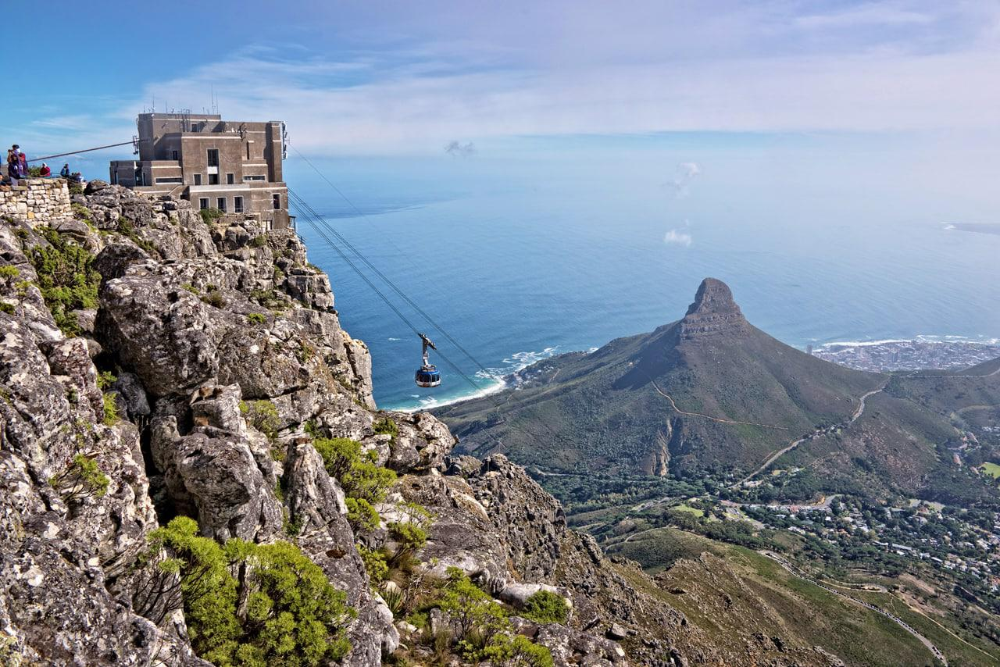
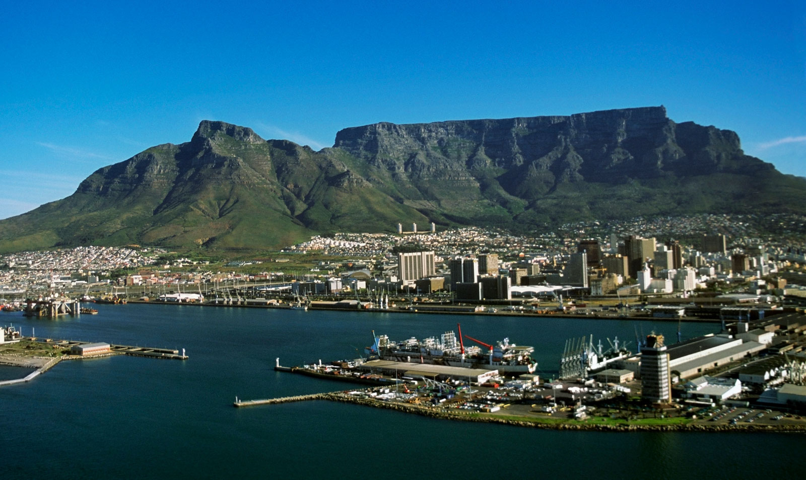
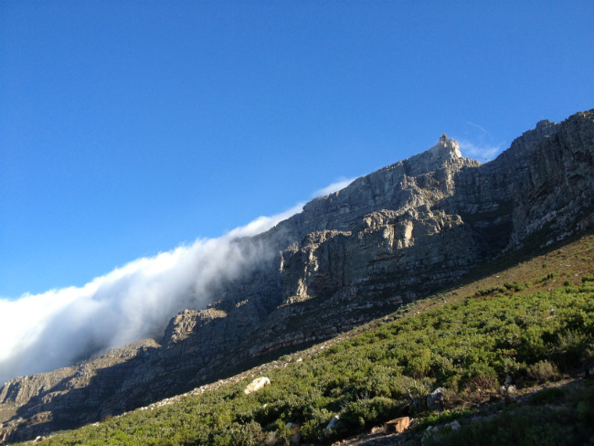
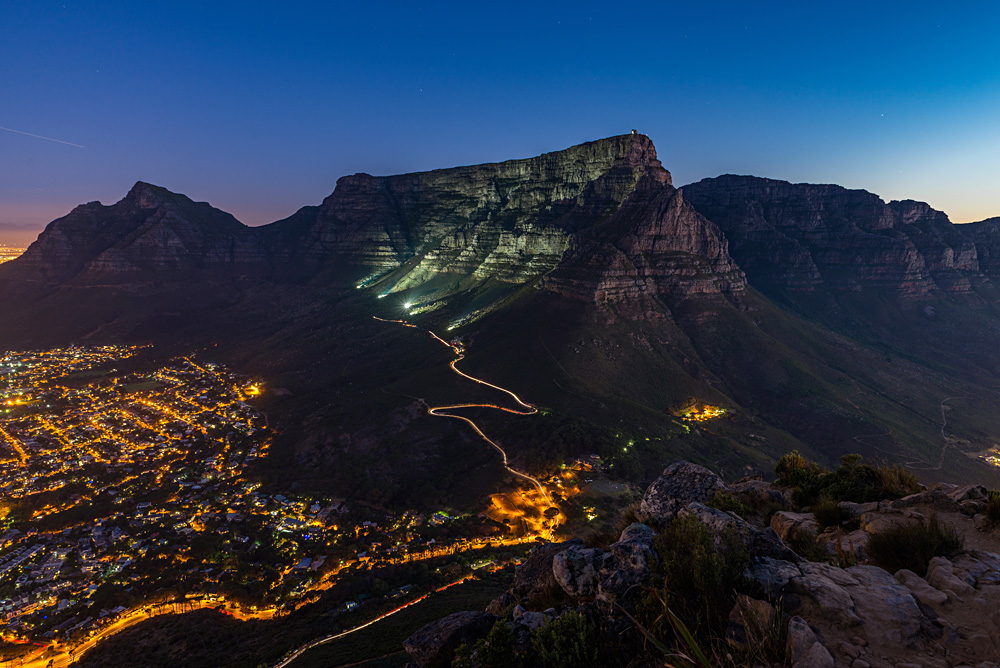

What to do at Table Mountain?
If you are up for the adventure, you can see many incredible sights hiking around Table Mountain. The view of Cape Town from the top of Table Mountain is stunning and you can visit other areas of Table Mountain to see more stunning views including the Cape of Good Hope, Cape Point and Maclear's Beacon. If you would like to discover more to do while visiting Table Mountain, click the image to the left.
Where is Table Mountain?
Table Mountain resides within Cape Town (a coastal town) on the southwestern tip of South Africa. If you would like to see a more detailed map of Table Mountain, click the image to the right.
How to get to Table Mountain?
The easiest way to get to Table Mountain would be to fly directly into Cape Town, and then take the bus line to the cablecar which would take you to the top of the mountain. If you want to learn more about your options of travel to Table Mountain and Cape Town, click the image to the left.





Want to see more images of Table Mountain? Click the image to the right!